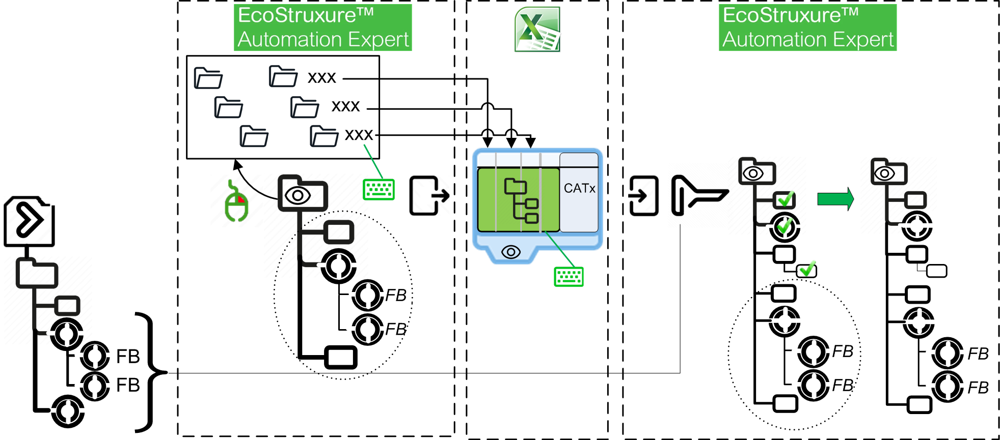

Bulk Development of a Process View
In large projects, you can speed up the development of a process tree-view and the assignment of instances therein by representing the hierarchy in Excel™.
In addition, this allows you to reuse a process view across several EcoStruxure Automation Expert solutions.
The overall procedure is as follows:

Defining the Excel headers in EcoStruxure Automation Expert and Export
These operations are optional: you may also start from an empty Process view.
HEADERS FOR PLANT MODEL
-
At the Process view root, right-click and select Define Plant Model; this opens a water fall editor displaying opposite the default generic names and the new generic names on ten levels.
-
Enter a new name describing the first level, for instance “Plant” (without quotes); special characters and spaces are not allowed.
-
Repeat the step 2, for as many levels as desired, for example “Area”, ”Unit”, “Process”, etc
-
Click Save; the new generic names will be the table headers in Excel. If the button is greyed out, check the names validity.
You have created folders and named them to reflect the Plant breakdown. You may have created some CAT instances from the Process view, or dragged-and-dropped some from the project. All these operations are described in Handling Application Instances.
EXPORT
-
In the Hierarchy view pad, click the icon
-
Name the destination Excel file (extension .xlsx) and click OK
-
If it is relevant, open the file and check it out.
Developing the Hierarchy in an Excel table
-
Open the exported Excel file or create a table in a new Excel file; in the latter case, name the sheet after the view, enter generic names describing roughly the levels (plant, unit, area, ...) in the headers row; anyway, these names will not show in the tree-view.
-
Check or enter the
Instance Name header name in the K column. -
Enter the names of plant, unit, area, ... as a bread crumbs trail across the successive columns; they will represent the parentship of nodes in the tree-view; do not use invalid characters such as *; duplicated names are allowed as far as they are not in the same column and share the same ancestors.
-
Enter in the K column the CAT instance names existing in the project that must be assigned to the view.
- Close the file.
-
An instance can be directly attached to the root; for this purpose, in its row, only the Instance Name column is filled.
-
The order of the nodes will reflect the order of the rows.
-
Comments are allowed after the K column.
Import the Excel table to the Process view
-
Make sure that the Excel file to import is closed.
-
Select the Excel file to import and click Open; the ImportHierarchyView window shows an outline with check boxes; anomalies are listed out in the Output pad.
-
Drill down the hierarchy and tick the items you want to keep; selecting a branch triggers the selection of the whole branch.
-
Click Import.
The Process view shows only the selected branches/instances (provided they exist in the project); the SubCATs are included only if the check box is ticked (this is reflected by the presence of the  icon above the tree-view); duplicated CAT instances which may be added by mistake in Excel are also excluded.
icon above the tree-view); duplicated CAT instances which may be added by mistake in Excel are also excluded.